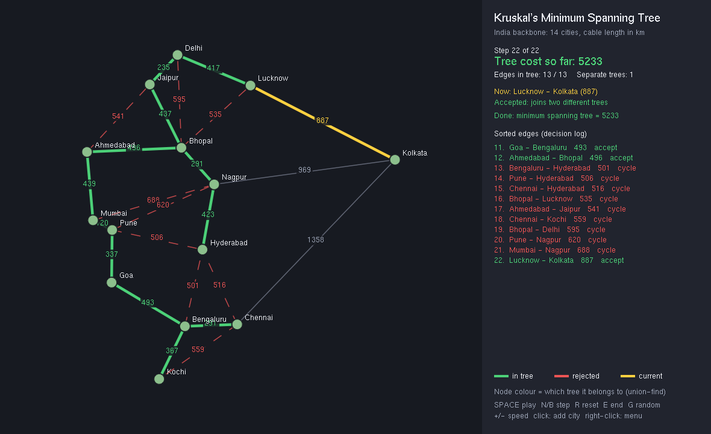
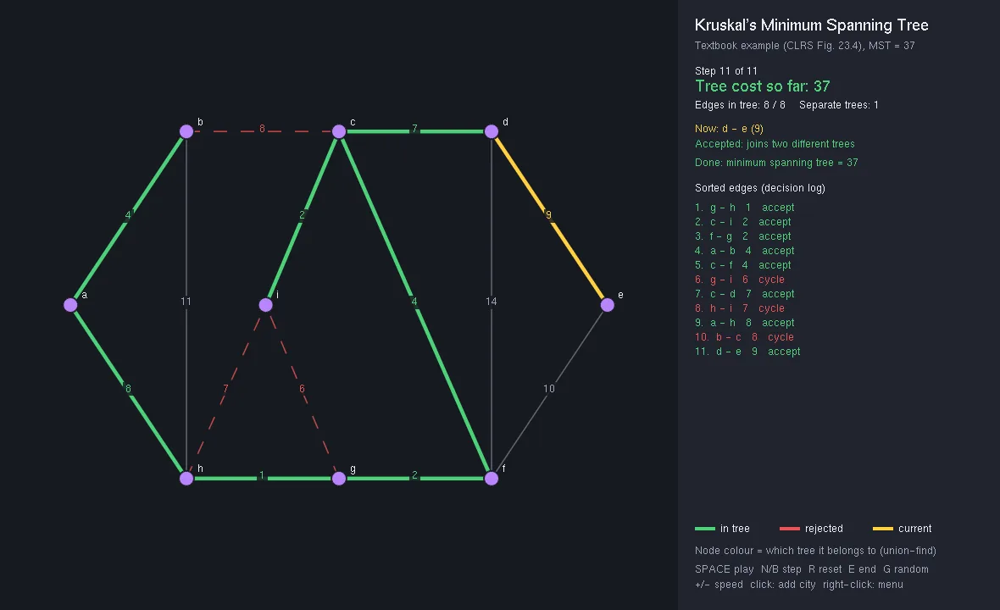

Kruskal's MST Visualiser
Watching the cheapest network get built, one edge at a time
An interactive OpenGL animation of Kruskal's algorithm with union-find. It finds the textbook answer (37), passes 1,560 checks including agreement with Prim's algorithm on 500 random graphs, and plans an India fibre backbone with 59% less cable.
How Kruskal decides
algorithm + results- 01Graph filenames · positions · weights
- 02Sort edgescheapest first, once
- 03Find rootsunion-find + path compression
- 04Accept / rejectjoin two trees or close a cycle
- 05Animateplay · pause · step back
- 06Reporttree cost · forest if disconnected
India fibre backbone, km of cable (lower is better)
CLRS Figure 23.4 edges
~/screens
See it working


[01] ~/the-problem
Why it matters
Telecom, power and road planners face the same question: connect every site at the lowest total cost. Kruskal's algorithm answers it, but it is hard to picture from a code listing alone.
The original coursework version rescanned the whole cost matrix every step, linked the wrong union-find node, built only on Windows and froze its window. This rebuild fixes all four and animates every decision.
Colours carry the logic: yellow is the edge being considered, green is in the tree, dashed red is rejected for closing a cycle.
[02] ~/how-it-works
How it works
Sort the edges once, track trees with union-find, and show every decision.
- 01
Load any graph
Graph files give city names, positions and weights, or 'auto' great-circle distances; random graphs and click-to-add work too.
- 02
Sort once
All edges are sorted by weight once, O(E log E), instead of rescanning the cost matrix on every step.
- 03
Union-find
Path compression and union by rank link the roots, fixing the original bug that linked a vertex instead of its root.
- 04
Accept or reject
An edge joining two different trees is accepted; one inside the same tree would close a cycle and is rejected.
- 05
Animate it
Timer-driven play, pause, step forward and back and speed control, so the window never freezes.
- 06
Check it
1,560 automated checks, including Kruskal = Prim on 500 random graphs, run under AddressSanitizer and UBSan.
[03] ~/results
Results
Two examples: the CLRS textbook graph with a known answer, and a real India fibre-backbone plan.
| EXAMPLE | NODES | CANDIDATE EDGES | MST EDGES | TOTAL | RESULT |
|---|---|---|---|---|---|
| India fibre backbone | 14 | 24 | 13 | 5,233 km | −59% cable |
| CLRS Figure 23.4 | 9 | 14 | 8 | 37 | matches textbook |
Disconnected graphs are detected and reported as a minimum spanning forest instead of failing.
HONEST LIMITS
— Straight-line distances ignore terrain and existing ducts, so real cable plans need route costs, not great-circle km.
— An MST minimises total length only; real backbones also need redundancy so one cut doesn't isolate a city.
WHAT I’D DO NEXT
→ Prim and Borůvka side by side
→ Redundant (2-edge-connected) network designs
→ Real route costs from road data
→ A WebGL version that runs in the browser